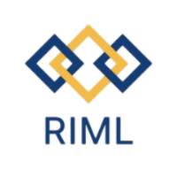

Optum Technology, UnitedHealth Group
AI/ML Research Intern (PhD Level)
Hey! I am Maryam Haghifam, a PhD student in Computer Science at the University of California, Los Angeles (expected graduation: December 2029), advised by Prof. Yizhou Sun. My research focuses on efficient and reliable large language model systems, particularly long-context memory, efficient inference, and agentic AI. I am interested in how LLMs can efficiently store, retrieve, and reason over long or evolving information, as well as inference techniques such as speculative decoding and multi-token prediction.
I am currently a Research Intern at Optum Technology, UnitedHealth Group, where I work on memory systems for longitudinal healthcare agents. I received my MSc in Computer Science from the University of Toronto, where I worked on machine learning systems, and my BSc in Electrical Engineering with a minor in Computer Engineering from the University of Tehran.
I am looking for Summer 2027 research / ML engineering internships.

EMNLP 2026 Main Conference
COLM 2026 Workshop – Context Beyond the Window: Persistent Knowledge in Language Models
TechRxiv preprint, 2026
Optum Technology, UnitedHealth Group
AI/ML Research Intern (PhD Level)

Robust and Interpretable Machine Learning Lab
Machine Learning Researcher
Computer Vision and AI Researcher
University of California, Los Angeles
Department of Computer Science — Ph.D. in Computer Science
Supervisor: Prof. Yizhou Sun
Department of Computer Science — M.Sc. in Computer Science
Supervisors: Prof. Gennady Pekhimenko and Prof. Nandita Vijaykumar
Department of Electrical and Computer Engineering — B.Sc. in Electrical Engineering (Control), Minor in Computer Engineering